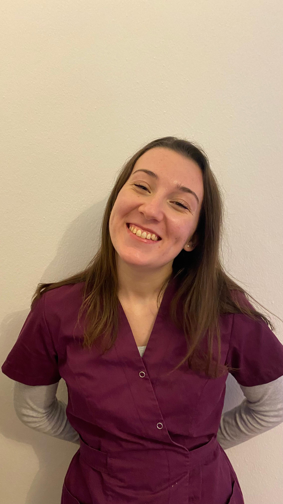
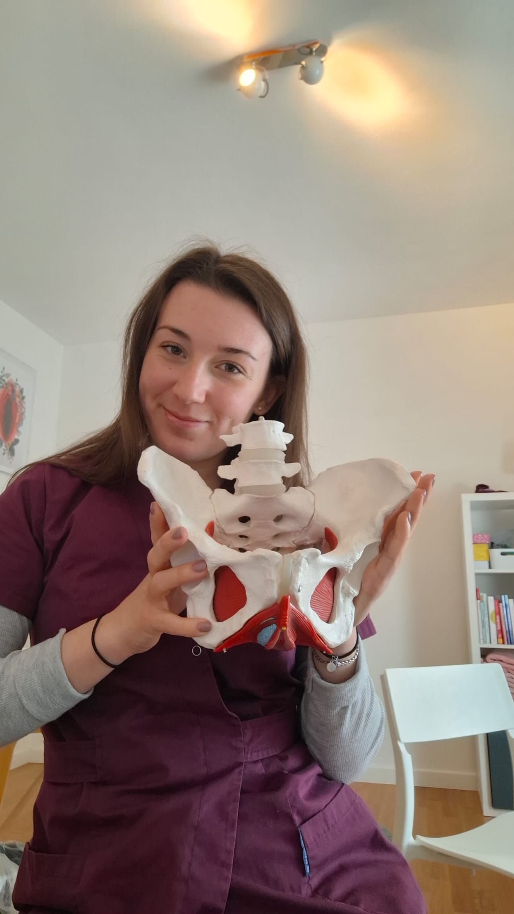

Il mio lavoro nasce dal desiderio di dare voce a chi soffre in silenzio: il tuo dolore o fastidio intimo non merita meno attenzione. Metto al centro la tua storia, perché ogni percorso di guarigione parte dall'ascolto.

Ogni problema ha una soluzione. Scopri le aree in cui posso aiutarti a ritrovare benessere e qualità di vita.
La prima visita è il momento in cui costruiamo le basi del tuo percorso. Non è solo un controllo tecnico, ma un incontro basato sull'ascolto e sull'andare alla radice dei sintomi.
Ci prenderemo il tempo necessario per ripercorrere la tua storia, i tuoi sintomi, le tue abitudini e i tuoi obiettivi. Ogni dettaglio è importante e capirai che ci sono molte più cose di quello che immagini che ruotano intorno al pavimento pelvico.
Analizzeremo insieme la funzionalità del tuo pavimento pelvico con estrema delicatezza, rispettando sempre i tuoi tempi e il tuo livello di comfort: ti spiegherò passo per passo cosa faremo.
Ti spiegherò cosa sta succedendo al tuo corpo e decideremo insieme la strategia migliore per farti tornare a stare bene.
Rispondo alle domande più comuni. Hai altre curiosità? Scrivimi senza impegno.
La soddisfazione delle mie pazienti è la mia più grande ricompensa.
Scegli il modo che preferisci per incontrarmi. Passa sopra ogni opzione per i dettagli, o clicca per scrivermi su WhatsApp.
Indirizzo: viale Giuseppe Tullio 13, 33100, Udine (UD)
Orari: su appuntamento
Contatto diretto: +39 324 549 2997
Indirizzo: studio O, strada per Vienna 41, 34151, Opicina (TS)
Orari: su appuntamento
Parcheggio: disponibile nelle vicinanze
Contatto diretto: +39 324 549 2997
Indirizzo: via Nazionale 17, 25052, Piamborno (BS)
Orari: su appuntamento
Contatto diretto: +39 324 549 2997
Piattaforma: Google Meet
Contatto diretto: +39 324 549 2997
Capisco che iniziare un percorso di riabilitazione pelvica possa sollevare dubbi o timori. Per questo, ho scelto di offrirti una chiamata conoscitiva gratuita di 15 minuti.
Sarà un momento tutto nostro in cui potrai espormi brevemente la tua situazione e io potrò spiegarti se e come il mio approccio può aiutarti. Senza impegno, solo per iniziare a conoscerci e capire se sono la professionista giusta per te.
✦ 100% gratuita · nessun obbligoAngela Marietti, ostetrica specializzata in riabilitazione del pavimento pelvico femminile, con particolare attenzione a tutte le problematiche di dolore. Ricevo in studio a Udine (UD), a Trieste (TS) e a Piamborno (BS), ma anche online ovunque tu ti trova. Nella mia pratica, ho imparato che il pavimento pelvico non è solo un insieme di muscoli, ma il centro vitale della salute femminile. Spesso custodisce storie, emozioni e cambiamenti profondi che meritano di essere accolti con delicatezza.
Se tu lo vorrai, ti accompagnerò a riscoprire questa parte fondamentale del tuo corpo, fornendoti gli strumenti per sentirti di nuovo a tuo agio, sicura e in armonia con te stessa. In questo spazio, la tua salute non è un numero o una diagnosi, ma un percorso condiviso fatto di empatia, competenza e rispetto profondo.
Credo che la cura della donna richieda un'attenzione sempre viva. Per questo continuo, giorno per giorno, a formarmi nelle dinamiche del pavimento pelvico, nella gestione del dolore pelvico, nel trattamento e prevenzione delle infezioni vaginali e urinarie ricorrenti, nelle sfide che accompagnano la sessualità e nella transizione verso la menopausa.

La riabilitazione del pavimento pelvico non riguarda solo il corpo fisico: tocca la femminilità, la sessualità, la maternità, la vita quotidiana. Per questo offro uno spazio privo di giudizi, dove ogni domanda è benvenuta e ogni emozione è legittima.
Il mio obiettivo non è solo trattare un sintomo, ma prendermi cura della persona nella sua interezza. Mi prendo il tempo necessario per conoscere la tua storia, i tuoi ritmi e le tue necessità, senza fretta e senza giudizio. Non esistono protocolli standard. Ogni corpo è unico e il percorso di riabilitazione viene cucito su misura per te, rispettando i tuoi tempi e la tua sensibilità.
Ogni condizione merita attenzione e cura personalizzata. Seleziona un'area per scoprire come posso aiutarti.
Guide, esercizi e informazioni utili sulla salute del pavimento pelvico. Scarica gratuitamente e porta la conoscenza con te.
Tutto quello che dovresti sapere sul pavimento pelvico: anatomia, funzioni e segnali da non ignorare.
Scarica PDF →Una routine di esercizi sicuri e progressivi per le prime settimane dopo il parto vaginale o cesareo.
Scarica PDF →Abitudini quotidiane, alimentazione e igiene intima per ridurre le recidive delle cistiti ricorrenti.
Scarica PDF →Strategie pratiche per gestire la dismenorrea nel quotidiano, in attesa di un percorso riabilitativo.
Scarica PDF →